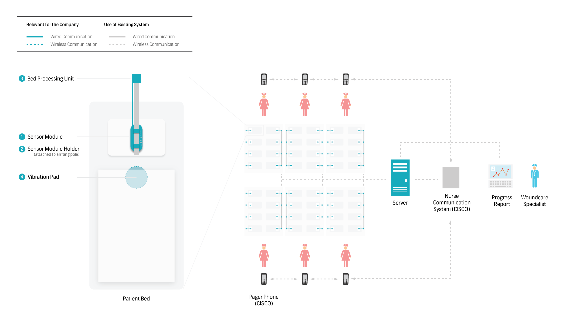
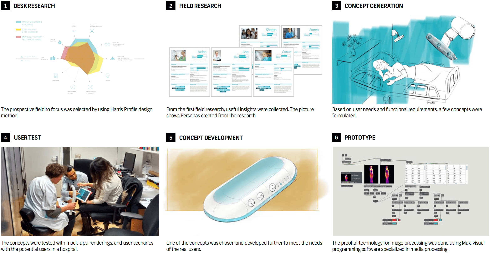

REPOSE MOBILITY CARE
Real time patient monitoring product-system preventing decubitus in hospitals
Joint Master Project / TU Delft / 2014-2015
Sahil Wadhwa / Sará Ester Kis / Stijn Jochems / Trine Gedde / Suhwa Lee
CONTRIBUTION
Took a lead in user experience insights, user tests, concept development, hardware/software prototyping(MAX MSP), and various Infographics
Setting buttons for nurses/caretakers to adjust reposition frequency and alarms.
MONITORING UNIT: BOTTOM
A visual (lighting) feedback shown to a patient lying underneath to encourage the patient to change position autonomously.
VIRBRATION PADS
Two vibration pads located underneath the mattress give a physical feedback to alert the patient to switch the lying position.
CONCEPT
The Repose MobilityCare is a patient position monitoring system developed for preventing pressure ulcers in a hospitals. The system monitors the patient’s position in bed over time, and helps the nurse to keep track of the repositions of the patient in order to prevent decubitus. For patients who are mobile and sound enough to reposition themselves, a patient feedback system can be turned on.
The Repose MobilityCare consists of a sensor module with an image sensor and a lamp that is placed over the patient’s bed. This module, with the aid of image processing algorithms, detects the patient’s position (supine, left side, right side, etc.) and the changes therein with time. If the patient does not move on his own, the ‘lamp’ part of the module intermittently glows to stimulate the patient. If the patient does not notice the light due to sleeping or facing away from it, gentle vibrations from vibration pads placed below the mattress stimulate the patient to respond. If the patient still can not move or chooses to not move, the sensor module sends a message to a nurse in charge via her pager phone to reposition the patient. If no repositioning is still registered, the alert can be forwarded to another nurse close by. Throughout the process, the visual sensor does not record any visual data of the patient, but only outputs the position data for further processing.
The eventual aim of the product is to lower the workload for the nurses and to reach a lower prevalence rate, both resulting in a financial benefit for the hospital.
FEATURES
USER SCENARIO
Nurse's scenario


Patient's scenario

SYSTEM DESIGN
DESIGN PROCESS
